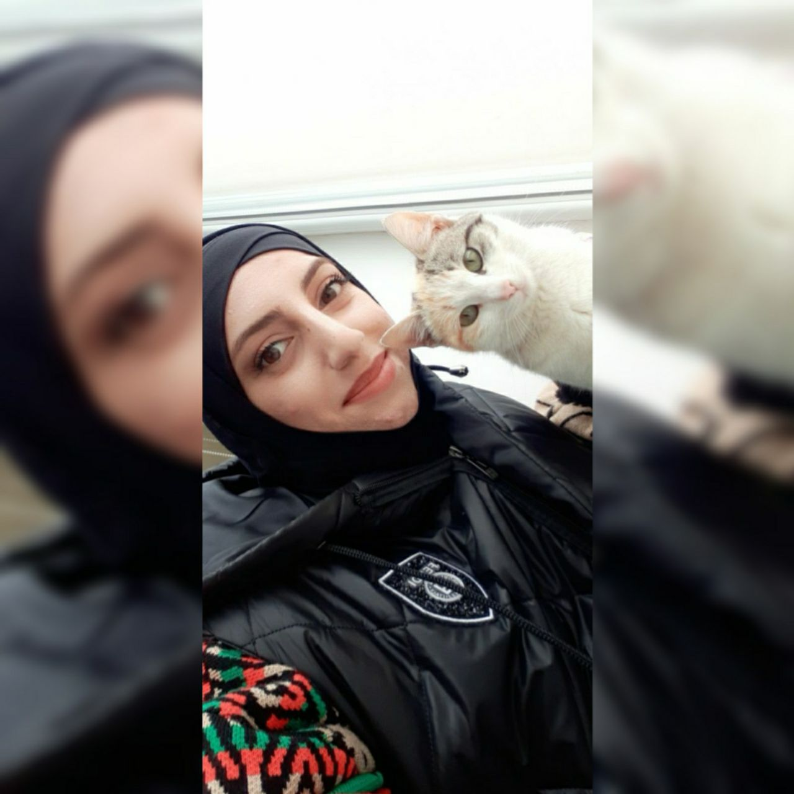
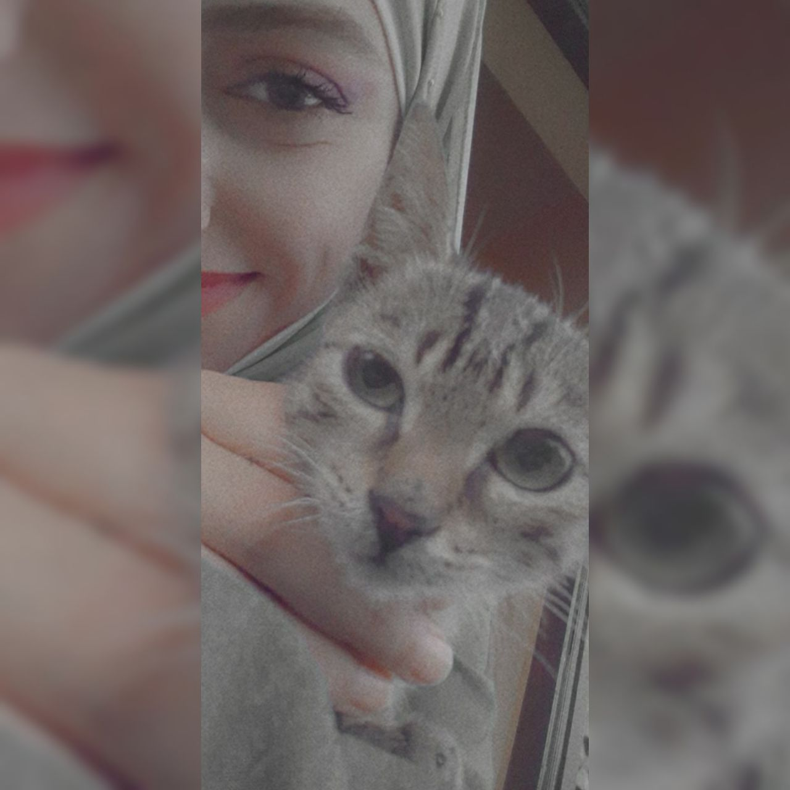
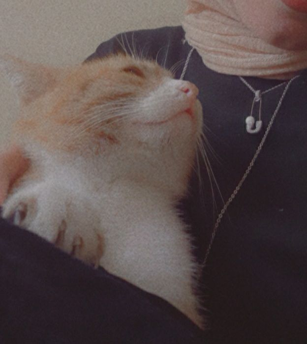
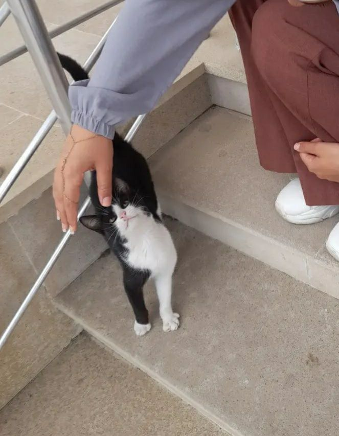

Sanubar's Favorite Animal
|  |
My name is Sanubar, and my favorite animal is the cat.Cats are very cute.
I have a cat. its name is Honey.There are many movies and cartoons about cats. For example Garfield. If you want to learn more about the cats, check out its Wikipedia page. |
You can give your cats the following names:
|  |
 |
 |
Cats do not meow to any living thing except humans. Because people talk loudly. For this reason, cats prefer to communicate with people through meowing. Cats don't like music. Every person has a different fingerprint. Every cat has a different nose print. A cat's purr can heal people. |
| Fog |
Honey |
Capella |